-
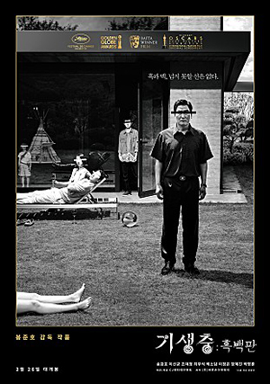
감독봉준호
출연송강호(기택), 이선균(동익), 조여정(연교)
출품분야 경쟁부문 - 황금종려상
줄거리“폐 끼치고 싶진 않았어요” 전원백수로 살 길 막막하지만 사이는 좋은 기택(송강호) 가족. 장남 기우(최우식)에게 명문대생 친구가 연결시켜 준 고액 과외 자리는 모처럼 싹튼 고정수입의 희망이다. 온 가족의 도움과 기대 속에 박사장(이선균) 집으로 향하는 기우. 글로벌 IT기업 CEO인 박사장의 저택에 도착하자 젊고 아름다운 사모님 연교(조여정)가 기우를 맞이한다. 그러나 이렇게 시작된 두 가족의 만남 뒤로, 걷잡을 수 없는 사건이 기다리고 있었으니…
기생충 (2019)
-
감독연제광
출연한지원(홍매)
출품분야 시네파운데이션
줄거리나와 내 룸메이트 령희는 불법체류자다. 어제, 령희가 단속반에 쫓기다 사고로 사망했다. 회사는 추모보다는 뒷수습 하기에만 바쁘다. 나는 회사가 숨긴 령희를 찾아 나만의 장례식을 치러줄 것이다.
령희 (2019)
-
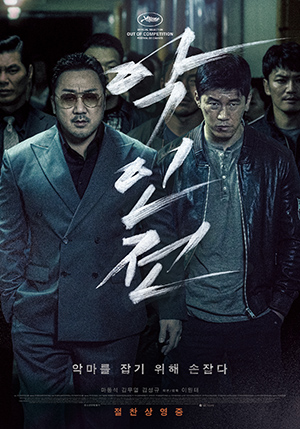
감독이원태
출연마동석(장동수), 김무열(정태석), 김성규(강경호)
출품분야 미드나잇 스크리닝
줄거리우연히 연쇄살인마의 표적이 되었다 살아난 조직 보스 장동수와 범인잡기에 혈안이 된 강력반 미친개 정태석. 타협할 수 없는 두 사람이 연쇄살인마 K를 잡기 위해 손잡는다. 표적은 하나, 룰도 하나! 먼저 잡는 놈이 갖는다!
악인전 (2019)
-
감독허건
출연하정민(참슬), 이가경(은미), 이호아(예령)
출품분야 비경쟁 단편
줄거리젊은 자영업자 참슬은 돈이 필요하다. 오랜만에 만난 고교동창들과의 송년회. 변호사가 된 은미는 비싼 밥을 사주며 으스대는 가운데, 집으로 돌아가는 길에 참슬은 어렵게 입을 연다. “은미야 돈 좀 빌려줄 수 있어?” 서로 자존심을 긁으며 날선 대화가 벌어지던 차. 그때, 쾅! 누군가 차에 치인다.
무기들의 시간 (2019)
-
감독장성원
출연송광자(안옥녀), 정희태(이병환), 이승연(나영란)
출품분야 비경쟁 단편
줄거리화창하고 따뜻한 날, 옥녀는 아들 병환과 며느리 영란, 손자, 손녀와 함께 나들이를 떠난다. 옥녀의 가족이 도착한 곳은 유채꽃이 아름답게 핀 공원이다. 오랜만에 가족들과 산책도 하고, 이른 새벽에 일어나 직접 만든 김밥도 함께 먹으며 즐거운 시간을 보내지만 어찌된 영문인지 옥녀는 적막한 모습이다.
나들이 (2018)
-
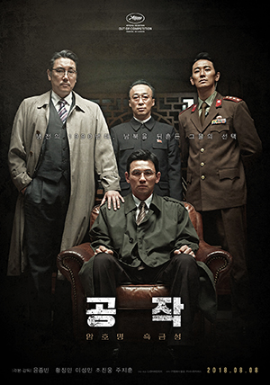
감독윤종빈
출연황정민(흑금성(박석영)), 이성민(리명운), 조진웅(최학성)
출품분야 미드나잇 스크리닝
줄거리북으로 간 스파이, 암호명 흑금성 1993년, 북한 핵 개발을 둘러싸고 한반도의 위기가 고조된다. 정보사 소령 출신으로 안기부에 스카우트된 박석영(황정민)은 ‘흑금성’이라는 암호명으로 북핵의 실체를 캐기 위해 북의 고위층 내부로 잠입하라는 지령을 받는다. 조국을 위해 굳은 신념으로 모든 것을 걸고 공작을 수행했던 그는 걷잡을 수 없는 갈등에 휩싸이는데…
공작 (2018)
-
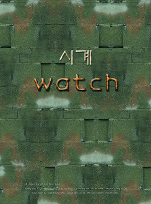
감독조현준
출연류경수(진현호)
출품분야 비경쟁 단편
줄거리이병 진현호는 군대 선임에게 성추행을 당한다. 어느날, 그는 선임으로부터 학대의 수위를 감면받을 기회를 얻게 된다. 그러나 그에게는 더욱 심한 대가를 치러야 한다는 비극이 기다리고 있는데...
시계 (2018)
-
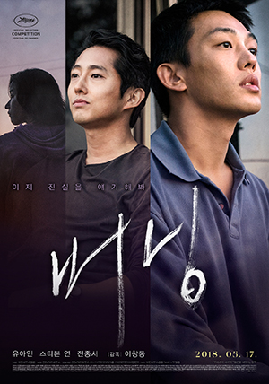
감독이창동
출연유아인(종수), 스티븐 연(벤), 전종서(해미)
출품분야 경쟁부문 - 벌칸상
줄거리"이제 진실을 얘기해봐" 유통회사 알바생 종수(유아인)는 배달을 갔다가 어릴 적 같은 동네에서 살았던 해미(전종서)를 만나고, 그녀에게서 아프리카 여행을 간 동안 자기가 키우는 고양이를 돌봐 달라는 부탁을 받는다. 여행에서 돌아온 해미는 아프리카에서 만난 벤(스티븐 연)이라는 정체불명의 남자를 종수에게 소개한다. 어느 날 벤은 해미와 함께 종수의 집으로 찾아와 자신의 비밀스러운 취미에 대해 고백한다. 그때부터 종수는 무서운 예감에 사로잡히게 되는데...
버닝 (2018)
-
감독박재현
출연최종률
출품분야 쇼트 필름 코너
줄거리다문화 가정의 특별한 하루를 들여다보는 영화로, 외국인 며느리를 본 어느 할아버지의 자신의 손자가 태어나는 하루를 그린 영화
첫만남 (2017)
-
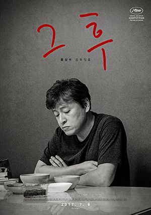
감독홍상수
출연권해효(봉완)
출품분야 경쟁부문 - 황금종려상
줄거리첫 출근날, 아름은 사장인 봉완의 헤어진 여자 자리에서 일하게 된다. 사랑의 노트가 발견되고, 봉완의 처가 회사로 찾아 오고, 아름은 헤어진 여자로 오해를 받는다. 결국 아름은 그날 회사를 그만 둘 수 밖에 없게 되는데…
그 후 (2017)
-
감독번가남
출연
출품분야 쇼트 필름 코너
줄거리금붕어의 기억력은 7초라고 한다. 7초 뒤 그들은 자연적으로 지나간 일들을 모두 잊고 모든 것들이 처음인 것처럼 새롭게 시작한다고 한다. 본편에서는 금붕어와 인간의 시각에서 보는 복잡하고 변화무쌍한 이성을 관찰하고 표현하였다.
뫼비우스 (2017)
-
감독홍상수
출연이자벨 위페르(클레어), 김민희(전만희), 장미희(남양혜)
출품분야 특별상영
줄거리만희는 칸 영화제 출장 중에 부정직하다는 이유로 일자리에서 쫓겨난다. 클레어라는 여자는 선생인데 거기서 폴라로이드 카메라로 사진을 찍고 다닌다. 그러다 만희를 만나 그녀의 사정에 공감하게 된다. 클레어는 마치 여러 가능성의 만희를 미리 혹은 돌아가서 볼 수 있는 사람인 듯 하고, 그건 칸 해변의 신비한 굴을 통해서 그렇게 할 수 있을 것이다.
클레어의 카메라 (2017)
-
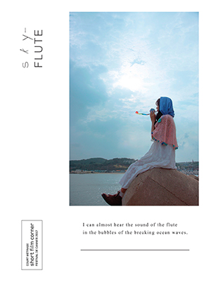
감독홍선영
출연전성우(오름), 박문아(아라), 금새록(찬미)
출품분야 경쟁부문
줄거리말 대신, 피리 소리를 통해 자신의 감정을 알리는 아라. 오름은 그런 아라와 가까워지면서, 미소를 짓는 방법도... 진심으로 마음을 전하는 방법도 배워가기 시작한다.
하늘피리 (2017)
-
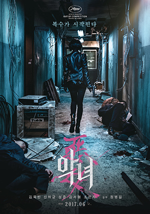
감독정병길
출연김옥빈(숙희), 신하균(중상), 성준(현수)
출품분야 미드나잇 스크리닝
줄거리어린 시절부터 킬러로 길러진 숙희. 그녀는 국가 비밀조직에 스카우트되어 새로운 삶을 살 기회를 얻는다. “10년만 일해주면 넌 자유야. 하지만 가짜처럼 보이는 순간, 그땐 우리가 널 제거한다” 살기 위해 죽여야만 하는 킬러 숙희 앞에 진실을 숨긴 의문의 두 남자가 등장하고, 자신을 둘러싼 엄청난 비밀에 마주하게 되면서 운명에 맞서기 시작하는데... "보여줄게, 내가 어떻게 만들어졌는지" 제작노트 보기
악녀 (2017)
-
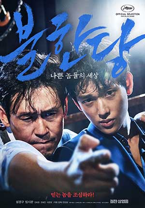
감독변성현
출연설경구(한재호), 임시완(조현수)
출품분야 미드나잇 스크리닝
줄거리
범죄조직의 1인자를 노리는 재호와 세상 무서운 것 없는 패기 넘치는 신참 현수는 교도소에서 만나 서로에게 끌리고 끈끈한 의리를 다져간다. 출소 후, 함께 권력을 차지하기 위해 의기투합하던 중, 두 사람의 숨겨왔던 야망이 조금씩 드러나고, 서로에 대해 새로운 사실을 알게 되면서 그들의 관계는 흔들리기 시작하는데… 믿는 놈을 조심하라! 믿음의 순간 배신은 이미 시작되었다! 제작노트 보기불한당: 나쁜 놈들의 세상 (2017)
-
감독문재웅
출연고동원(아버지), 이영원(어머니), 강민석(아들)
출품분야 쇼트 필름 코너
줄거리이른 아침 아들 재혁이 공부를 하는데, 아버지가 집으로 돌아오더니 직장을 그만두었다고 가족들에게 통보를 한다. 당황한 어머니는 아버지를 몰아세우고, 딸도 일어나 눈물을 흘린다. 이해받지 못한 아버지는 포구로 자리를 피한다. 그러자, 어머니와 딸, 아들이 아버지를 따라 포구로 향한다.
포구 (2017)
-
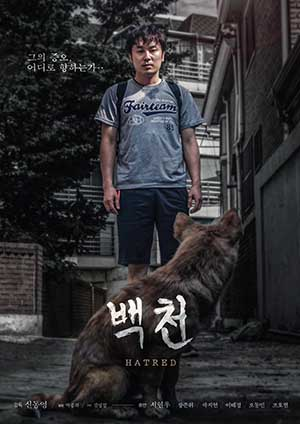
감독신동영
출연서현우(백천)
출품분야 쇼트 필름 코너
줄거리두통에 시달리던 백천은 주위사람들에게 무시당하고 있다는 망상에 빠져들게 되고.. 쌓여가던 그의 증오는 점차 엉뚱한 이들에게로 향하기 시작한다.
백천 (2017)
-
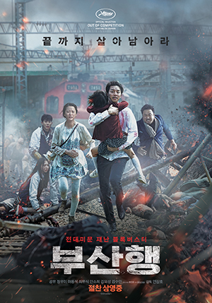
감독연상호
출연공유(석우), 정유미(성경), 마동석(상화)
출품분야 미드나잇 스크리닝
줄거리전대미문의 재난이 대한민국을 덮친다! 정체불명의 바이러스가 전국으로 확산되고 대한민국 긴급재난경보령이 선포된 가운데, 열차에 몸을 실은 사람들은 단 하나의 안전한 도시 부산까지 살아가기 위한 치열한 사투를 벌이게 된다. 서울에서 부산까지의 거리 442KM 지키고 싶은, 지켜야만 하는 사람들의 극한의 사투!
부산행 (2016)
-
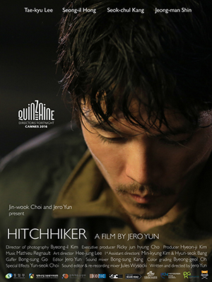
감독윤재호
출연이태규(중년남자), 강석철(동료경찰), 신정만(운전수)
출품분야 The Directors' Fortnight
줄거리늦은 밤. 인근이 드문 도로변에서 정체 불명의 한 중년 남자가 히치하이킹을 시도한다. 아무도 그를 태워 주지 않자 그는 다짜고짜 어느 봉고차 앞에 멈춰 선다. 어이없어 하는 운전수는 그의 북한 말투와 지저분한 옷차림을 보고는 그를 간첩으로 여겨 근처 파출소로 데려간다. 조사를 받게 되는 중년 남자. 그는 벙어리 처럼 단 한마디도 하질 않는다. 운전수가 집으로 돌아간 뒤, 파출소 팀장과 대면을 하게 된 중년 남자는 이윽고 말을 꺼내고 그에게 술을 마시자고 권유를 한다...
히치하이커 (2016)
-
감독박영주
출연이승연(민영)
출품분야 파운데이션
줄거리5년 전, 어린 아들을 잃은 민영. 그녀는 ‘아이 잃은 엄마들의 모임’에 참석했다가 누군가의 웃음소리를 듣는다.
1킬로그램 (2016)
-
감독나홍진
출연곽도원(종구), 황정민(일광), 쿠니무라 준(외지인)
출품분야 비경쟁부문
줄거리낯선 외지인(쿠니무라 준)이 나타난 후 벌어지는 의문의 연쇄 사건들로 마을이 발칵 뒤집힌다. 경찰은 집단 야생 버섯 중독으로 잠정적 결론을 내리지만 모든 사건의 원인이 그 외지인 때문이라는 소문과 의심이 걷잡을 수 없이 퍼져 나간다. 경찰 ‘종구’(곽도원)는 현장을 목격했다는 여인 ‘무명’(천우희)을 만나면서 외지인에 대한 소문을 확신하기 시작한다. 딸 ‘효진’(김환희)이 피해자들과 비슷한 증상으로 아파오기 시작하자 다급해진 ‘종구’. 외지인을 찾아 난동을 부리고, 무속인 ‘일광’(황정민)을 불러들이는데...
곡성 (2016)
-
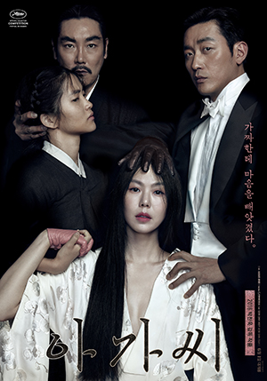
감독박찬욱
출연김민희(히데코), 김태리(숙희), 하정우(백작)
출품분야 경쟁부문 - 벌칸상
줄거리어릴 적 부모를 잃고 후견인 이모부(조진웅)의 엄격한 보호 아래 살아가는 귀족 아가씨(김민희). 그녀에게 백작이 추천한 새로운 하녀가 찾아온다. 매일 이모부의 서재에서 책을 읽는 것이 일상의 전부인 외로운 아가씨는 순박해 보이는 하녀에게 조금씩 의지하기 시작한다.
아가씨 (2016)
-
감독신수원
출연서영희(해림), 권소현(미나), 김영민(상우)
출품분야 주목할 만한 시선
줄거리한 병원의 간호조무사 해림(서영희)과 의사 혁규(변요한)는 심장 이식이 필요한 전신마비 환자 철오를 담당하게 된다. 어느 날, 정체불명의 사고 환자 미나(권소현)가 실려오게 되고, 냉혹한 재벌 2세 상우는 해림에게 그녀의 가족을 찾아 장기기증 동의서를 받아오라는 위험한 거래를 제안한다. 상황이 어려웠던 해림은 제안을 어렵게 수락하고, ‘마돈나’라는 별명을 가졌던 미나의 과거를 추적해가며 충격적인 비밀들을 마주하게 되는데…
마돈나 (2015)
-
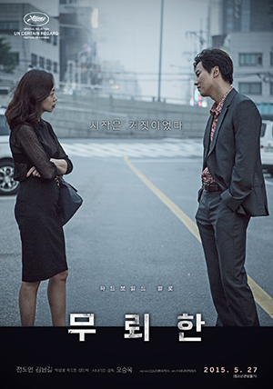
감독오승욱
출연전도연(김혜경), 김남길(정재곤), 박성웅(박준길)
출품분야 주목할 만한 시선
줄거리범인을 잡기 위해선 어떤 수단이든 다 쓸 수 있는 형사 정재곤(김남길 扮).하지만, 재곤은 준길을 잡기 위해 혜경 곁에 머무는 사이 퇴폐적이고 강해 보이는 술집 여자의 외면 뒤에 자리한 혜경의 외로움과 눈물, 순수함을 느낀다. 오직 범인을 잡는다는 목표에 중독되어 있었던 그는 자기 감정의 정체도 모른 채 마음이 흔들린다. 그리고 언제 연락이 올 지도 모르는 준길을 기다리던 혜경은, 자기 옆에 있어주는 그에게 마음을 열기 시작한다.
무뢰한 (2015)
-
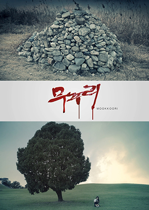
감독김명석
출연주하(보라), 이다정(수리)
출품분야 비경쟁 단편
줄거리고등학생 18살 소녀 보라. 평범한 삶을 살기를 원하지만 엄마가 무당이라는 이유로 학교에서 늘 괴롭힘을 받는다. 보라의 유일한 친구였던 선희도 학교 일진 수리에게 협박을 받고 보라를 배신하게 되고, 보라는 막다른 길로 내몰린다. 아무도 자신을 도와줄 수 없는 상황에서 엄마에게 물려받은 신기로 자신의 선택에 따라 벌어질 미래를 점치게 되는데...
무꾸리 (2015)
-
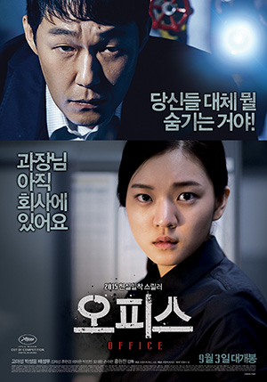
감독홍원찬
출연고아성(이미례), 박성웅(종훈)
출품분야 미드나잇 스크리닝
줄거리 어느 날 한 가족의 가장이자 착실한 회사원인 김병국 과장이 일가족을 살해하고 사라졌다. 이에 형사 종훈은 그의 회사 동료들을 상대로 수사를 시작하지만 모두들 말을 아끼고, 특히 김과장과 사이가 좋았다는 이미례 인턴은 무언가를 숨기고 있는 눈치다. 게다가 종훈은 김과장이 사건 직후 회사에 들어온 CCTV 화면을 확보하지만, 그가 회사를 떠난 화면은 어디에도 없어 사건은 미궁으로 빠진다. 한편, 김과장이 아직 잡히지 않았다는 사실에 동료들은 불안에 떠는 가운데, 이들에게 의문의 사건들이 계속 일어나는데…
오피스 (2015)